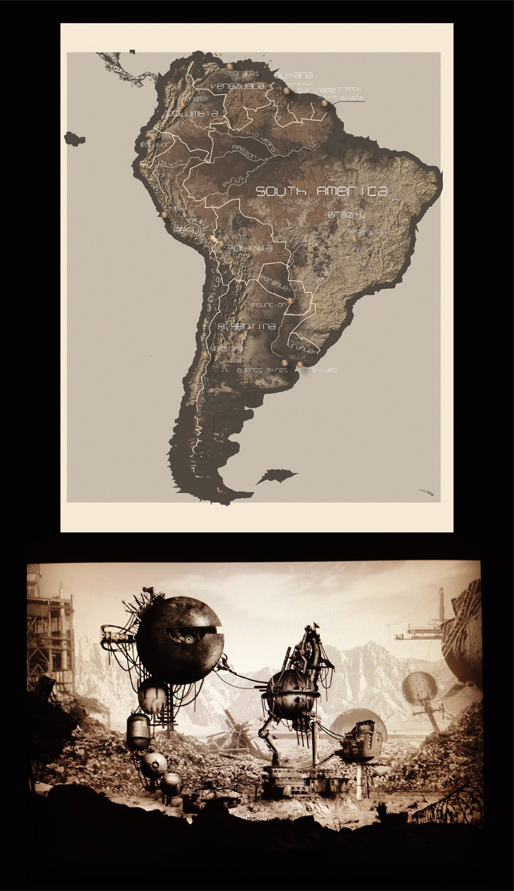

This map was a class activity assignment in GEOG: 572 "Cartography and Graphic Design" at the University of Wisconsin Madison. We were given a vector map of South America in Adobe Illustrator and were then instructed to pick a piece of artwork to design in a similar style. The piece pictured below the map is a concept illustration by a dear friend, Chelsea Clasen, who is a concept artist. I ended up getting carried away, and instead of adding "made-up" texture to my land cover, I did a shaded relief using DEM data, hillshades, and land cover data. This was my *quickly* finished product, enjoy!